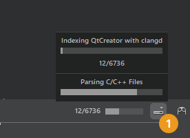

Clang Code Model
The code model is the part of an IDE that understands the language you are using to write your application. It is the framework that allows Qt Creator to offer the following services:
- Code completion
- Syntactic and semantic highlighting
- Navigating in the code by using the locator, following symbols, and so on
- Inspecting code by using the class browser, the outline, and so on
- Diagnostics
- Tooltips
- Finding symbols
- Renaming symbols
- Quick fixes
The Clang code model plugin offers some of these services for C++ on top of Clangd.
About the Clang Code Model
The Clang project has libraries for parsing C language family source files. The feedback you get through warning and error markers is the same as a compiler will give you, not an incomplete set or a close approximation, as when using the built-in Qt Creator code model. Clang focuses on detailed information for diagnostics, which is really useful if the code has typos, for example. We make use of these libraries via the clangd tool, which implements an LSP server.
Clang keeps up with the development of the C++ language. At the time of this writing, it supports C++98/03, C++11, C++14, C++17, C89, C99, Objective-C, and Objective-C++.
On the downside, for large projects using Clang as code model is slower than using the built-in code model. Clang does not need to generate object files, but it still needs to parse and analyze the source files. For small projects that only use STL, this is relatively fast. But for larger projects that include several files, processing a single file and all the included files can take a while.
The Clang code model plugin now offers some of the same services as the built-in C/C++ code model:
- Code completion
- Syntactic and semantic highlighting
- Diagnostics
- Outline of symbols
- Tooltips
- Following symbols
- Renaming symbols
- Finding occurrences of symbols
To use the built-in code model instead, select Preferences > C++ > clangd, and deselect the Use clangd check box. This setting also exists on the project level, so that you can have the Clang-based services generally enabled, but switch them off for certain projects, or vice versa.
You can configure Clang diagnostics for:
- Clang code model (globally or at project level)
- Clang tools (globally or at project level)
Clangd Indexing
The clangd index provides exact and complete results for services such as finding references, following symbols under cursor, and using the locator, even for complex constructs. When you open a project, clangd scans the source files to generate the index. For large projects, this can take a while, but the index is persistent and re-scanning is incremental, so nothing is lost by closing and re-starting Qt Creator.
To temporarily disable global indexing, select Toggle Progress Details (1), and then select X on the progress bar.

By default, Qt Creator runs one clangd process per project. If you have created sessions that have related projects, you can specify that the projects in the session should be managed by a single clangd process.
The document outline in the Outline view is backed by clangd's document symbol support, which makes the results more reliable than before.
See also Code Model, Clangd, Specify clangd settings, Specify Clang tools settings, and Use compilation databases.